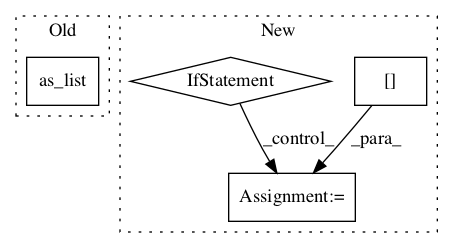

1bef8a0cb502401e33f8572897d981ef81a1a829,tf_agents/bandits/policies/neural_linucb_policy.py,NeuralLinUCBPolicy,_action,#NeuralLinUCBPolicy#Any#Any#Any#,248
Before Change
// Check the shape of the observation matrix.
if not observation.shape.is_compatible_with([None, self._context_dim]):
raise ValueError("Observation shape is expected to be {}. Got {}.".format(
[None, self._context_dim], observation.shape.as_list() ))
observation = tf.cast(observation, dtype=self._dtype)
After Change
lambda: self._get_actions_from_linucb(encoded_observation, mask))
arm_observations = ()
if self._accepts_per_arm_features:
arm_observations = observation[bandit_spec_utils.PER_ARM_FEATURE_KEY]
policy_info = policy_utilities.populate_policy_info(
arm_observations, chosen_actions, (), est_mean_rewards,
self._emit_policy_info, self._accepts_per_arm_features)
return policy_step.PolicyStep(chosen_actions, policy_state, policy_info)In pattern: SUPERPATTERN
Frequency: 3
Non-data size: 4
Instances Project Name: tensorflow/agents
Commit Name: 1bef8a0cb502401e33f8572897d981ef81a1a829
Time:
Author: null
File Name: tf_agents/bandits/policies/neural_linucb_policy.py
Class Name: NeuralLinUCBPolicy
Method Name: _action
Project Name: tensorflow/lattice
Commit Name: 1c75176947730de8322acf6ad996096625e92e3a
Time:
Author: null
File Name: tensorflow_lattice/python/rtl_layer.py
Class Name: RTL
Method Name: call
Project Name: deepmind/sonnet
Commit Name: e164c3574da160fb72fc962947a783fa299424e3
Time:
Author: null
File Name: sonnet/src/batch_apply.py
Class Name:
Method Name: merge_leading_dims